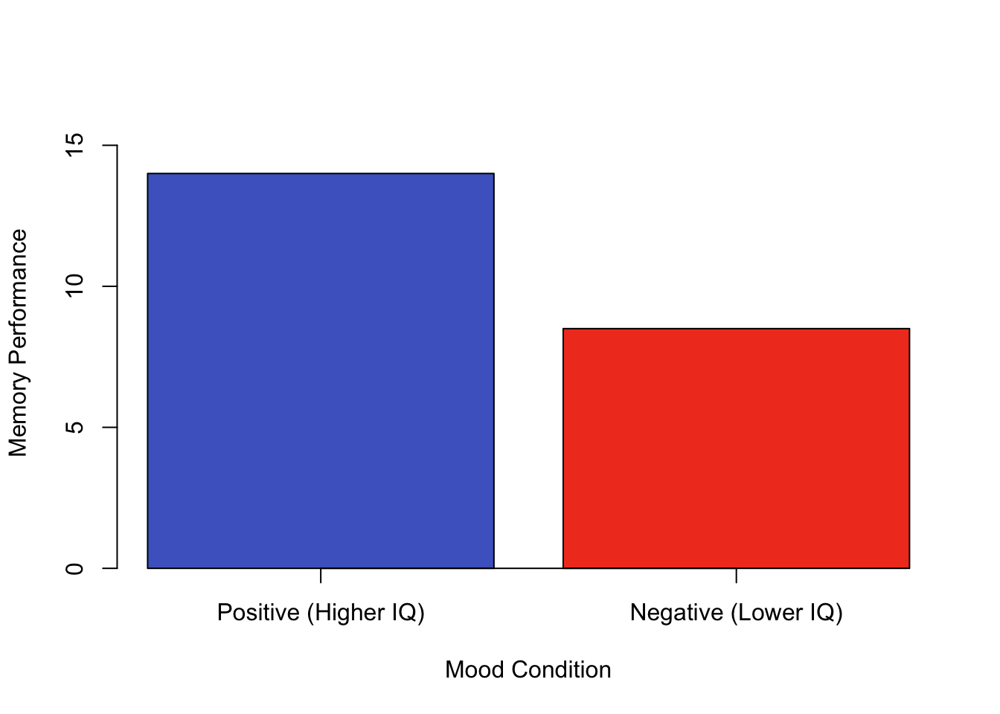
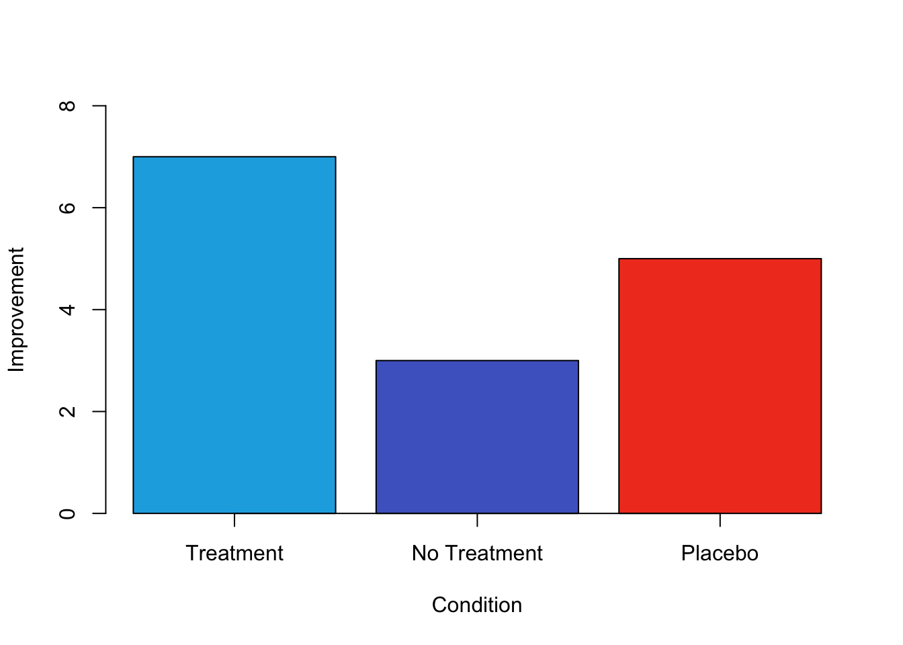

|
|
5 Experimental Research
In the late 1960s social psychologists John Darley and Bibb Latané proposed a counterintuitive hypothesis. The more witnesses there are to an accident or a crime, the less likely any of them is to help the victim (Darley & Latané, 1968). They also suggested the theory that this happens because each witness feels less responsible for helping—a process referred to as the “diffusion of responsibility.” Darley and Latané noted that their ideas were consistent with many real-world cases. For example, a New York woman named Kitty Genovese was assaulted and murdered while several witnesses failed to help. But Darley and Latané also understood that such isolated cases did not provide convincing evidence for their hypothesized “bystander effect.” There was no way to know, for example, whether any of the witnesses to Kitty Genovese’s murder would have helped had there been fewer of them.
So to test their hypothesis, Darley and Latané created a simulated emergency situation in a laboratory. Each of their college student participants was isolated in a small room and told that he or she would be having a discussion about college life with other students via an intercom system. Early in the discussion, however, one of the students began having what seemed to be an epileptic seizure. Over the intercom came the following: “I could really-er-use some help so if somebody would-er-give me a little h-help-uh-er-er-er-er-er c-could somebody-er-er-help-er-uh-uh-uh (choking sounds)…I’m gonna die-er-er-I’m…gonna die-er-help-er-er-seizure-er- [chokes, then quiet]” (Darley & Latané, 1968, p. 379).
In actuality, there were no other students. These comments had been prerecorded and were played back to create the appearance of a real emergency. The key to the study was that some participants were told that the discussion involved only one other student (the victim), others were told that it involved two other students, and still others were told that it included five other students. Because this was the only difference between these three groups of participants, any difference in their tendency to help the victim would have to have been caused by it. And sure enough, the likelihood that the participant left the room to seek help for the “victim” decreased from 85% to 62% to 31% as the number of “witnesses” increased.
The Parable of the 38 Witnesses
The story of Kitty Genovese has been told and retold in numerous psychology textbooks. The standard version is that there were 38 witnesses to the crime, that all of them watched (or listened) for an extended period of time, and that none of them did anything to help. However, recent scholarship suggests that the standard story is inaccurate in many ways (Manning et al., 2007). For example, only six eyewitnesses testified at the trial, none of them was aware that he or she was witnessing a lethal assault, and there have been several reports of witnesses calling the police or even coming to the aid of Kitty Genovese. Although the standard story inspired a long line of research on the bystander effect and the diffusion of responsibility, it may also have directed researchers’ and students’ attention away from other equally interesting and important issues in the psychology of helping—including the conditions in which people do in fact respond collectively to emergency situations.
The study that Darley and Latané conducted was a particular kind of study called an experiment. Experiments are used to determine not only whether there is a statistical relationship between two variables but also whether the relationship is a causal one. For this reason, experiments are one of the most common and useful tools in the psychological researcher’s toolbox. In this chapter, we look at experiments in detail. We consider first what sets experiments apart from other kinds of studies and why they support causal conclusions while other kinds of studies do not. We then look at two basic ways of designing an experiment—between-subjects designs and within-subjects designs—and discuss their pros and cons. Finally, we consider several important practical issues that arise when conducting experiments.
5.1 Experiment Basics
LEARNING OBJECTIVES
- Explain what an experiment is and recognize examples of studies that are experiments and studies that are not experiments.
- Explain what internal validity is and why experiments are considered to be high in internal validity.
- Explain what external validity is and evaluate studies in terms of their external validity.
- Distinguish between the manipulation of the independent variable and control of extraneous variables and explain the importance of each.
- Recognize examples of confounding variables and explain how they affect the internal validity of a study.
What Is an Experiment?
As we saw earlier in the book, an experiment is a type of study designed specifically to answer the question of whether there is a causal relationship between two variables. Do changes in an independent variable cause changes in a dependent variable? Experiments have two fundamental features. The first is that the researchers manipulate, or systematically vary, the level of the independent variable. The different levels of the independent variable are called conditions. For example, in Darley and Latané’s experiment, the independent variable was the number of witnesses that participants believed to be present. The researchers manipulated this independent variable by telling participants that there were either one, two, or five other students involved in the discussion, thereby creating three conditions. The second fundamental feature of an experiment is that the researcher controls, or minimizes the variability in, variables other than the independent and dependent variable. These other variables are called extraneous variables. Darley and Latané tested all their participants in the same room, exposed them to the same emergency situation, and so on. They also randomly assigned their participants to conditions so that the three groups would be similar to each other to begin with. Notice that although the words manipulation and control have similar meanings in everyday language, researchers make a clear distinction between them. They manipulate the independent variable by systematically changing its levels and control other variables by holding them constant.
Internal and External Validity
Internal Validity
Recall that the fact that two variables are statistically related does not necessarily mean that one causes the other. “Correlation does not imply causation.” For example, if it were the case that people who exercise regularly are happier than people who do not exercise regularly, this would not necessarily mean that exercising increases people’s happiness. It could mean instead that greater happiness causes people to exercise (the directionality problem) or that something like better physical health causes people to exercise and be happier (the third-variable problem).
The purpose of an experiment, however, is to show that two variables are statistically related and to do so in a way that supports the conclusion that the independent variable caused any observed differences in the dependent variable. The basic logic is this: If the researcher creates two or more highly similar conditions and then manipulates the independent variable to produce just one difference between them, then any later difference between the conditions must have been caused by the independent variable. For example, because the only difference between Darley and Latané’s conditions was the number of students that participants believed to be involved in the discussion, this must have been responsible for differences in helping between the conditions.
An empirical study is said to be high in internal validity if the way it was conducted supports the conclusion that the independent variable caused any observed differences in the dependent variable. Thus experiments are high in internal validity because the way they are conducted—with the manipulation of the independent variable and the control of extraneous variables—provides strong support for causal conclusions.
External Validity
At the same time, the way that experiments are conducted sometimes leads to a different kind of criticism. Specifically, the need to manipulate the independent variable and control extraneous variables means that experiments are often conducted under conditions that seem artificial or unlike “real life” (Stanovich, 2013). In many psychology experiments, the participants are all college undergraduates and come to a classroom or laboratory to fill out a series of paper-and-pencil questionnaires or to perform a carefully designed computerized task. Consider, for example, an experiment in which researcher Barbara Fredrickson and her colleagues had college students come to a laboratory on campus and complete a math test while wearing a swimsuit (Fredrickson et al., 1998). At first, this might seem silly. When will college students ever have to complete math tests in their swimsuits outside of this experiment?
The issue we are confronting is that of external validity. An empirical study is high in external validity if the way it was conducted supports generalizing the results to people and situations beyond those actually studied. As a general rule, studies are higher in external validity when the participants and the situation studied are similar to those that the researchers want to generalize to. Imagine, for example, that a group of researchers is interested in how shoppers in large grocery stores are affected by whether breakfast cereal is packaged in yellow or purple boxes. Their study would be high in external validity if they studied the decisions of ordinary people doing their weekly shopping in a real grocery store. If the shoppers bought much more cereal in purple boxes, the researchers would be fairly confident that this would be true for other shoppers in other stores. Their study would be relatively low in external validity, however, if they studied a sample of college students in a laboratory at a selective college who merely judged the appeal of various colors presented on a computer screen. If the students judged purple to be more appealing than yellow, the researchers would not be very confident that this is relevant to grocery shoppers’ cereal-buying decisions.
We should be careful, however, not to draw the blanket conclusion that experiments are low in external validity. One reason is that experiments need not seem artificial. Consider that Darley and Latané’s experiment provided a reasonably good simulation of a real emergency situation. Or consider field experiments that are conducted entirely outside the laboratory. In one such experiment, Robert Cialdini and his colleagues studied whether hotel guests choose to reuse their towels for a second day as opposed to having them washed as a way of conserving water and energy (Cialdini, 2005). These researchers manipulated the message on a card left in a large sample of hotel rooms. One version of the message emphasized showing respect for the environment, another emphasized that the hotel would donate a portion of their savings to an environmental cause, and a third emphasized that most hotel guests choose to reuse their towels. The result was that guests who received the message that most hotel guests choose to reuse their towels reused their own towels substantially more often than guests receiving either of the other two messages. Given the way they conducted their study, it seems very likely that their result would hold true for other guests in other hotels.
A second reason not to draw the blanket conclusion that experiments are low in external validity is that they are often conducted to learn about psychological processes that are likely to operate in a variety of people and situations. Let us return to the experiment by Fredrickson and colleagues. They found that the women in their study, but not the men, performed worse on the math test when they were wearing swimsuits. They argued that this was due to women’s greater tendency to objectify themselves—to think about themselves from the perspective of an outside observer—which diverts their attention away from other tasks. They argued, furthermore, that this process of self-objectification and its effect on attention is likely to operate in a variety of women and situations—even if none of them ever finds herself taking a math test in her swimsuit.
Manipulation of the Independent Variable
Again, to manipulate an independent variable means to change its level systematically so that different groups of participants are exposed to different levels of that variable, or the same group of participants is exposed to different levels at different times. For example, to see whether expressive writing affects people’s health, a researcher might instruct some participants to write about traumatic experiences and others to write about neutral experiences. The different levels of the independent variable are referred to as conditions, and researchers often give the conditions short descriptive names to make it easy to talk and write about them. In this case, the conditions might be called the “traumatic condition” and the “neutral condition.”
Notice that the manipulation of an independent variable must involve the active intervention of the researcher. Comparing groups of people who differ on the independent variable before the study begins is not the same as manipulating that variable. For example, a researcher who compares the health of people who already keep a journal with the health of people who do not keep a journal has not manipulated this variable and therefore not conducted an experiment. This is important because groups that already differ in one way at the beginning of a study are likely to differ in other ways too. For example, people who choose to keep journals might also be more conscientious, more introverted, or less stressed than people who do not. Therefore, any observed difference between the two groups in terms of their health might have been caused by whether or not they keep a journal, or it might have been caused by any of the other differences between people who do and do not keep journals. Thus the active manipulation of the independent variable is crucial for eliminating the third-variable problem.
Of course, there are many situations in which the independent variable cannot be manipulated for practical or ethical reasons and therefore an experiment is not possible. For example, whether or not people have a significant early illness experience cannot be manipulated, making it impossible to do an experiment on the effect of early illness experiences on the development of hypochondriasis. This does not mean it is impossible to study the relationship between early illness experiences and hypochondriasis—only that it must be done using nonexperimental approaches. We will discuss this in detail later in the book.
In many experiments, the independent variable is a construct that can only be manipulated indirectly. For example, a researcher might try to manipulate participants’ stress levels indirectly by telling some of them that they have five minutes to prepare a short speech that they will then have to give to an audience of other participants. In such situations, researchers often include a manipulation check in their procedure. A manipulation check is a separate measure of the construct the researcher is trying to manipulate. For example, researchers trying to manipulate participants’ stress levels might give them a paper-and-pencil stress questionnaire or take their blood pressure—perhaps right after the manipulation or at the end of the procedure—to verify that they successfully manipulated this variable.
Control of Extraneous Variables
An extraneous variable is anything that varies in the context of a study other than the independent and dependent variables. In an experiment on the effect of expressive writing on health, for example, extraneous variables would include participant variables (individual differences) such as their writing ability, their diet, and their shoe size. They would also include situation or task variables such as the time of day when participants write, whether they write by hand or on a computer, and the weather. Extraneous variables pose a problem because many of them are likely to have some effect on the dependent variable. For example, participants’ health will be affected by many things other than whether or not they engage in expressive writing. This can make it difficult to separate the effect of the independent variable from the effects of the extraneous variables, which is why it is important to control extraneous variables by holding them constant.
Extraneous Variables as “Noise”
Extraneous variables make it difficult to detect the effect of the independent variable in two ways. One is by adding variability or “noise” to the data. Imagine a simple experiment on the effect of mood (happy vs. sad) on the number of happy childhood events people are able to recall. Participants are put into a negative or positive mood (by showing them a happy or sad video clip) and then asked to recall as many happy childhood events as they can. The two leftmost columns of Table @ref(tab:noise) show what the data might look like if there were no extraneous variables and the number of happy childhood events participants recalled was affected only by their moods. Every participant in the happy mood condition recalled exactly four happy childhood events, and every participant in the sad mood condition recalled exactly three. The effect of mood here is quite obvious. In reality, however, the data would probably look more like those in the two rightmost columns of Table @ref(tab:noise). Even in the happy mood condition, some participants would recall fewer happy memories because they have fewer to draw on, use less effective strategies, or are less motivated. And even in the sad mood condition, some participants would recall more happy childhood memories because they have more happy memories to draw on, they use more effective recall strategies, or they are more motivated. Although the mean difference between the two groups is the same as in the idealized data, this difference is much less obvious in the context of the greater variability in the data. Thus one reason researchers try to control extraneous variables is so their data look more like the idealized data in Table @ref(tab:noise), which makes the effect of the independent variable is easier to detect (although real data never look quite that good).
One way to control extraneous variables is to hold them constant. This can mean holding situation or task variables constant by testing all participants in the same location, giving them identical instructions, treating them in the same way, and so on. It can also mean holding participant variables constant. For example, many studies of language limit participants to right-handed people, who generally have their language areas isolated in their left cerebral hemispheres. Left-handed people are more likely to have their language areas isolated in their right cerebral hemispheres or distributed across both hemispheres, which can change the way they process language and thereby add noise to the data.
In principle, researchers can control extraneous variables by limiting participants to one very specific category of person, such as 20-year-old, straight, female, right-handed, sophomore psychology majors. The obvious downside to this approach is that it would lower the external validity of the study—in particular, the extent to which the results can be generalized beyond the people actually studied. For example, it might be unclear whether results obtained with a sample of younger straight women would apply to older gay men. In many situations, the advantages of a diverse sample outweigh the reduction in noise achieved by a homogeneous one.
Extraneous Variables as Confounding Variables
The second way that extraneous variables can make it difficult to detect the effect of the independent variable is by becoming confounding variables. A confounding variable is an extraneous variable that differs on average across levels of the independent variable. For example, in almost all experiments, participants’ intelligence quotients (IQs) will be an extraneous variable. But as long as there are participants with lower and higher IQs at each level of the independent variable so that the average IQ is roughly equal, then this variation is probably acceptable (and may even be desirable). What would be bad, however, would be for participants at one level of the independent variable to have substantially lower IQs on average and participants at another level to have substantially higher IQs on average. In this case, IQ would be a confounding variable.
To confound means to confuse, and this is exactly what confounding variables do. Because they differ across conditions—just like the independent variable—they provide an alternative explanation for any observed difference in the dependent variable. Figure @ref(fig:confound) shows the results of a hypothetical study, in which participants in a positive mood condition scored higher on a memory task than participants in a negative mood condition. But if IQ is a confounding variable—with participants in the positive mood condition having higher IQs on average than participants in the negative mood condition—then it is unclear whether it was the positive moods or the higher IQs that caused participants in the first condition to score higher. One way to avoid confounding variables is by holding extraneous variables constant. For example, one could prevent IQ from becoming a confounding variable by limiting participants only to those with IQs of exactly 100. But this approach is not always desirable for reasons we have already discussed. A second and much more general approach—random assignment to conditions—will be discussed in detail shortly.

KEY TAKEAWAYS
- An experiment is a type of empirical study that features the manipulation of an independent variable, the measurement of a dependent variable, and control of extraneous variables.
- Studies are high in internal validity to the extent that the way they are conducted supports the conclusion that the independent variable caused any observed differences in the dependent variable. Experiments are generally high in internal validity because of the manipulation of the independent variable and control of extraneous variables.
- Studies are high in external validity to the extent that the result can be generalized to people and situations beyond those actually studied. Although experiments can seem “artificial”—and low in external validity—it is important to consider whether the psychological processes under study are likely to operate in other people and situations.
EXERCISES
- Practice: List five variables that can be manipulated by the researcher in an experiment. List five variables that cannot be manipulated by the researcher in an experiment.
- Practice: For each of the following topics, decide whether that topic could be studied using an experimental research design and explain why or why not.
- Effect of parietal lobe damage on people’s ability to do basic arithmetic.
- Effect of being clinically depressed on the number of close friendships people have.
- Effect of group training on the social skills of teenagers with Asperger’s syndrome.
- Effect of paying people to take an IQ test on their performance on that test.
5.2 Experimental Design
LEARNING OBJECTIVES
- Explain the difference between between-subjects and within-subjects experiments, list some of the pros and cons of each approach, and decide which approach to use to answer a particular research question.
- Define random assignment, distinguish it from random sampling, explain its purpose in experimental research, and use some simple strategies to implement it.
- Define what a control condition is, explain its purpose in research on treatment effectiveness, and describe some alternative types of control conditions.
- Define several types of carryover effect, give examples of each, and explain how counterbalancing helps to deal with them.
In this section, we look at some different ways to design an experiment. The primary distinction we will make is between approaches in which each participant experiences one level of the independent variable and approaches in which each participant experiences all levels of the independent variable. The former are called between-subjects experiments and the latter are called within-subjects experiments.
Between-Subjects Experiments
In a between-subjects experiment, each participant is tested in only one condition. For example, a researcher with a sample of 100 college students might assign half of them to write about a traumatic event and the other half write about a neutral event. Or a researcher with a sample of 60 people with severe agoraphobia (fear of open spaces) might assign 20 of them to receive each of three different treatments for that disorder. It is essential in a between-subjects experiment that the researcher assign participants to conditions so that the different groups are, on average, highly similar to each other. Those in a trauma condition and a neutral condition, for example, should include a similar proportion of men and women, and they should have similar average intelligence quotients (IQs), similar average levels of motivation, similar average numbers of health problems, and so on. This is a matter of controlling these extraneous participant variables across conditions so that they do not become confounding variables.
Random Assignment
The primary way that researchers accomplish this kind of control of extraneous variables across conditions is called random assignment, which means using a random process to decide which participants are tested in which conditions. Do not confuse random assignment with random sampling. Random sampling is a method for selecting a sample from a population, and it is rarely used in psychological research. Random assignment is a method for assigning participants in a sample to the different conditions, and it is an important element of all experimental research in psychology and other fields too.
In its strictest sense, random assignment should meet two criteria. One is that each participant has an equal chance of being assigned to each condition (e.g., a 50% chance of being assigned to each of two conditions). The second is that each participant is assigned to a condition independently of other participants. Thus one way to assign participants to two conditions would be to flip a coin for each one. If the coin lands heads, the participant is assigned to Condition A, and if it lands tails, the participant is assigned to Condition B. For three conditions, one could use a computer to generate a random integer from 1 to 3 for each participant. If the integer is 1, the participant is assigned to Condition A; if it is 2, the participant is assigned to Condition B; and if it is 3, the participant is assigned to Condition C. In practice, a full sequence of conditions—one for each participant expected to be in the experiment—is usually created ahead of time, and each new participant is assigned to the next condition in the sequence as he or she is tested. When the procedure is computerized, the computer program often handles the random assignment.
One problem with coin flipping and other strict procedures for random assignment is that they are likely to result in unequal sample sizes in the different conditions. Unequal sample sizes are generally not a serious problem, and you should never throw away data you have already collected to achieve equal sample sizes. However, for a fixed number of participants, it is statistically most efficient to divide them into equal-sized groups. It is standard practice, therefore, to use a kind of modified random assignment that keeps the number of participants in each group as similar as possible. One approach is block randomization. In block randomization, all the conditions occur once in the sequence before any of them is repeated. Then they all occur again before any of them is repeated again. Within each of these “blocks,” the conditions occur in a random order. Again, the sequence of conditions is usually generated before any participants are tested, and each new participant is assigned to the next condition in the sequence. Table @ref(tab:block) shows such a sequence for assigning nine participants to three conditions. The Research Randomizer website (http://www.randomizer.org) will generate block randomization sequences for any number of participants and conditions. Again, when the procedure is computerized, the computer program often handles the block randomization.
| Participant | Condition |
|---|---|
| 1 | A |
| 2 | C |
| 3 | B |
| 4 | B |
| 5 | C |
| 6 | A |
| 7 | C |
| 8 | B |
| 9 | A |
Random assignment is not guaranteed to control all extraneous variables across conditions. It is always possible that just by chance, the participants in one condition might turn out to be substantially older, less tired, more motivated, or less depressed on average than the participants in another condition. However, there are some reasons that this is not a major concern. One is that random assignment works better than one might expect, especially for large samples. Another is that the inferential statistics that researchers use to decide whether a difference between groups reflects a difference in the population takes the “fallibility” of random assignment into account. Yet another reason is that even if random assignment does result in a confounding variable and therefore produces misleading results, this is likely to be detected when the experiment is replicated. The upshot is that random assignment to conditions—although not infallible in terms of controlling extraneous variables—is always considered a strength of a research design.
Treatment and Control Conditions
Between-subjects experiments are often used to determine whether a treatment works. In psychological research, a treatment is any intervention meant to change people’s behavior for the better. This includes psychotherapies and medical treatments for psychological disorders but also interventions designed to improve learning, promote conservation, reduce prejudice, and so on. To determine whether a treatment works, participants are randomly assigned to either a treatment condition, in which they receive the treatment, or a control condition, in which they do not receive the treatment. If participants in the treatment condition end up better off than participants in the control condition—for example, they are less depressed, learn faster, conserve more, express less prejudice—then the researcher can conclude that the treatment works. In research on the effectiveness of psychotherapies and medical treatments, this type of experiment is often called a randomized clinical trial.
There are different types of control conditions. In a no-treatment control condition, participants receive no treatment whatsoever. One problem with this approach, however, is the existence of placebo effects. A placebo is a simulated treatment that lacks any active ingredient or element that should make it effective, and a placebo effect is a positive effect of such a treatment. Many folk remedies that seem to work—such as eating chicken soup for a cold or placing soap under the bedsheets to stop nighttime leg cramps—are probably nothing more than placebos. Although placebo effects are not well understood, they are probably driven primarily by people’s expectations that they will improve. Having the expectation to improve can result in reduced stress, anxiety, and depression, which can alter perceptions and even improve immune system functioning (Price et al., 2008).
Placebo effects are interesting in their own right (see box “The Powerful Placebo”), but they also pose a serious problem for researchers who want to determine whether a treatment works. Figure @ref(fig:placebo) shows some hypothetical results in which participants in a treatment condition improved more on average than participants in a no-treatment control condition. If these conditions (the two leftmost bars in @ref(fig:placebo)) were the only conditions in this experiment, however, one could not conclude that the treatment worked. It could be instead that participants in the treatment group improved more because they expected to improve, while those in the no-treatment control condition did not.

Fortunately, there are several solutions to this problem. One is to include a placebo control condition, in which participants receive a placebo that looks much like the treatment but lacks the active ingredient or element thought to be responsible for the treatment’s effectiveness. When participants in a treatment condition take a pill, for example, then those in a placebo control condition would take an identical-looking pill that lacks the active ingredient in the treatment (a “sugar pill”). In research on psychotherapy effectiveness, the placebo might involve going to a psychotherapist and talking in an unstructured way about one’s problems. The idea is that if participants in both the treatment and the placebo control groups expect to improve, then any improvement in the treatment group over and above that in the placebo control group must have been caused by the treatment and not by participants’ expectations. This is what is shown by a comparison of the two outer bars in Figure @ref(fig:placebo).
Of course, the principle of informed consent requires that participants be told that they will be assigned to either a treatment or a placebo control condition—even though they cannot be told which until the experiment ends. In many cases the participants who had been in the control condition are then offered an opportunity to have the real treatment. An alternative approach is to use a waitlist control condition, in which participants are told that they will receive the treatment but must wait until the participants in the treatment condition have already received it. This allows researchers to compare participants who have received the treatment with participants who are not currently receiving it but who still expect to improve (eventually). A final solution to the problem of placebo effects is to leave out the control condition completely and compare any new treatment with the best available alternative treatment. For example, a new treatment for simple phobia could be compared with standard exposure therapy. Because participants in both conditions receive a treatment, their expectations about improvement should be similar. This approach also makes sense because once there is an effective treatment, the interesting question about a new treatment is not simply “Does it work?” but “Does it work better than what is already available?”
The Powerful Placebo
Many people are not surprised that placebos can have a positive effect on disorders that seem fundamentally psychological, including depression, anxiety, and insomnia. However, placebos can also have a positive effect on disorders that most people think of as fundamentally physiological. These include asthma, ulcers, and warts (Shapiro & Shapiro, 2000). There is even evidence that placebo surgery—also called “sham surgery”—can be as effective as actual surgery.
Medical researcher J. Bruce Moseley and his colleagues conducted a study on the effectiveness of two arthroscopic surgery procedures for osteoarthritis of the knee (Moseley et al., 2002). The control participants in this study were prepped for surgery, received a tranquilizer, and even received three small incisions in their knees. But they did not receive the actual arthroscopic surgical procedure. The surprising result was that all participants improved in terms of both knee pain and function, and the sham surgery group improved just as much as the treatment groups. According to the researchers, “This study provides strong evidence that arthroscopic lavage with or without débridement [the surgical procedures used] is not better than and appears to be equivalent to a placebo procedure in improving knee pain and self-reported function” (p. 85).

5.3 Within-Subjects Experiments
In a within-subjects experiment, each participant is tested under all conditions. Consider an experiment on the effect of a defendant’s physical attractiveness on judgments of his guilt. Again, in a between-subjects experiment, one group of participants would be shown an attractive defendant and asked to judge his guilt, and another group of participants would be shown an unattractive defendant and asked to judge his guilt. In a within-subjects experiment, however, the same group of participants would judge the guilt of both an attractive and an unattractive defendant.
The primary advantage of this approach is that it provides maximum control of extraneous participant variables. Participants in all conditions have the same mean IQ, same socioeconomic status, same number of siblings, and so on—because they are the very same people. Within-subjects experiments also make it possible to use statistical procedures that remove the effect of these extraneous participant variables on the dependent variable and therefore make the data less “noisy” and the effect of the independent variable easier to detect. We will look more closely at this idea later in the book.
Carryover Effects and Counterbalancing
The primary disadvantage of within-subjects designs is that they can result in carryover effects. A carryover effect is an effect of being tested in one condition on participants’ behavior in later conditions. One type of carryover effect is a practice effect, where participants perform a task better in later conditions because they have had a chance to practice it. Another type is a fatigue effect, where participants perform a task worse in later conditions because they become tired or bored. Being tested in one condition can also change how participants perceive stimuli or interpret their task in later conditions. This is called a context effect. For example, an average-looking defendant might be judged more harshly when participants have just judged an attractive defendant than when they have just judged an unattractive defendant. Within-subjects experiments also make it easier for participants to guess the hypothesis. For example, a participant who is asked to judge the guilt of an attractive defendant and then is asked to judge the guilt of an unattractive defendant is likely to guess that the hypothesis is that defendant attractiveness affects judgments of guilt. This could lead the participant to judge the unattractive defendant more harshly because he thinks this is what he is expected to do. Or it could make participants judge the two defendants similarly in an effort to be “fair.”
Carryover effects can be interesting in their own right. (Does the attractiveness of one person depend on the attractiveness of other people that we have seen recently?) But when they are not the focus of the research, carryover effects can be problematic. Imagine, for example, that participants judge the guilt of an attractive defendant and then judge the guilt of an unattractive defendant. If they judge the unattractive defendant more harshly, this might be because of his unattractiveness. But it could be instead that they judge him more harshly because they are becoming bored or tired. In other words, the order of the conditions is a confounding variable. The attractive condition is always the first condition and the unattractive condition the second. Thus any difference between the conditions in terms of the dependent variable could be caused by the order of the conditions and not the independent variable itself.
There is a solution to the problem of order effects, however, that can be used in many situations. It is counterbalancing, which means testing different participants in different orders. For example, some participants would be tested in the attractive defendant condition followed by the unattractive defendant condition, and others would be tested in the unattractive condition followed by the attractive condition. With three conditions, there would be six different orders (ABC, ACB, BAC, BCA, CAB, and CBA), so some participants would be tested in each of the six orders. With counterbalancing, participants are assigned to orders randomly, using the techniques we have already discussed. Thus random assignment plays an important role in within-subjects designs just as in between-subjects designs. Here, instead of randomly assigning to conditions, they are randomly assigned to different orders of conditions. In fact, it can safely be said that if a study does not involve random assignment in one form or another, it is not an experiment.
There are two ways to think about what counterbalancing accomplishes. One is that it controls the order of conditions so that it is no longer a confounding variable. Instead of the attractive condition always being first and the unattractive condition always being second, the attractive condition comes first for some participants and second for others. Likewise, the unattractive condition comes first for some participants and second for others. Thus any overall difference in the dependent variable between the two conditions cannot have been caused by the order of conditions. A second way to think about what counterbalancing accomplishes is that if there are carryover effects, it makes it possible to detect them. One can analyze the data separately for each order to see whether it had an effect.
When 9 Is “Larger” Than 221
Researcher Michael Birnbaum has argued that the lack of context provided by between-subjects designs is often a bigger problem than the context effects created by within-subjects designs. To demonstrate this, he asked one group of participants to rate how large the number 9 was on a 1-to-10 rating scale and another group to rate how large the number 221 was on the same 1-to-10 rating scale (Birnbaum, 1999). Participants in this between-subjects design gave the number 9 a mean rating of 5.13 and the number 221 a mean rating of 3.10. In other words, they rated 9 as larger than 221! According to Birnbaum, this is because participants spontaneously compared 9 with other one-digit numbers (in which case it is relatively large) and compared 221 with other three-digit numbers (in which case it is relatively small).
Simultaneous Within-Subjects Designs
So far, we have discussed an approach to within-subjects designs in which participants are tested in one condition at a time. There is another approach, however, that is often used when participants make multiple responses in each condition. Imagine, for example, that participants judge the guilt of 10 attractive defendants and 10 unattractive defendants. Instead of having people make judgments about all 10 defendants of one type followed by all 10 defendants of the other type, the researcher could present all 20 defendants in a sequence that mixed the two types. The researcher could then compute each participant’s mean rating for each type of defendant. Or imagine an experiment designed to see whether people with social anxiety disorder remember negative adjectives (e.g., “stupid,” “incompetent”) better than positive ones (e.g., “happy,” “productive”). The researcher could have participants study a single list that includes both kinds of words and then have them try to recall as many words as possible. The researcher could then count the number of each type of word that was recalled. There are many ways to determine the order in which the stimuli are presented, but one common way is to generate a different random order for each participant.
Between-Subjects or Within-Subjects?
Almost every experiment can be conducted using either a between-subjects design or a within-subjects design. This means that researchers must choose between the two approaches based on their relative merits for the particular situation.
Between-subjects experiments have the advantage of being conceptually simpler and requiring less testing time per participant. They also avoid carryover effects without the need for counterbalancing. Within-subjects experiments have the advantage of controlling extraneous participant variables, which generally reduces noise in the data and makes it easier to detect a relationship between the independent and dependent variables.
A good rule of thumb, then, is that if it is possible to conduct a within-subjects experiment (with proper counterbalancing) in the time that is available per participant—and you have no serious concerns about carryover effects—this is probably the best option. If a within-subjects design would be difficult or impossible to carry out, then you should consider a between-subjects design instead. For example, if you were testing participants in a doctor’s waiting room or shoppers in line at a grocery store, you might not have enough time to test each participant in all conditions and therefore would opt for a between-subjects design. Or imagine you were trying to reduce people’s level of prejudice by having them interact with someone of another race. A within-subjects design with counterbalancing would require testing some participants in the treatment condition first and then in a control condition. But if the treatment works and reduces people’s level of prejudice, then they would no longer be suitable for testing in the control condition. This is true for many designs that involve a treatment meant to produce long-term change in participants’ behavior (e.g., studies testing the effectiveness of psychotherapy). Clearly, a between-subjects design would be necessary here.
Remember also that using one type of design does not preclude using the other type in a different study. There is no reason that a researcher could not use both a between-subjects design and a within-subjects design to answer the same research question. In fact, professional researchers often do exactly this.
KEY TAKEAWAYS
- Experiments can be conducted using either between-subjects or within-subjects designs. Deciding which to use in a particular situation requires careful consideration of the pros and cons of each approach.
- Random assignment to conditions in between-subjects experiments or to orders of conditions in within-subjects experiments is a fundamental element of experimental research. Its purpose is to control extraneous variables so that they do not become confounding variables.
- Experimental research on the effectiveness of a treatment requires both a treatment condition and a control condition, which can be a no-treatment control condition, a placebo control condition, or a waitlist control condition. Experimental treatments can also be compared with the best available alternative.
EXERCISES
- Discussion: For each of the following topics, list the pros and cons of a between-subjects and within-subjects design and decide which would be better.
- You want to test the relative effectiveness of two training programs for running a marathon.
- Using photographs of people as stimuli, you want to see if smiling people are perceived as more intelligent than people who are not smiling.
- In a field experiment, you want to see if the way a panhandler is dressed (neatly vs. sloppily) affects whether or not passersby give him any money.
- You want to see if concrete nouns (e.g., dog) are recalled better than abstract nouns (e.g., truth).
- Discussion: Imagine that an experiment shows that participants who receive psychodynamic therapy for a dog phobia improve more than participants in a no-treatment control group. Explain a fundamental problem with this research design and at least two ways that it might be corrected.
5.4 Conducting Experiments
LEARNING OBJECTIVES
- Describe several strategies for recruiting participants for an experiment.
- Explain why it is important to standardize the procedure of an experiment and several ways to do this.
- Explain what pilot testing is and why it is important.
The information presented so far in this chapter is enough to design a basic experiment. When it comes time to conduct that experiment, however, several additional practical issues arise. In this section, we consider some of these issues and how to deal with them. Much of this information applies to nonexperimental studies as well as experimental ones.
Recruiting Participants
Of course, you should be thinking about how you will obtain your participants from the beginning of any research project. Unless you have access to people with schizophrenia or incarcerated juvenile offenders, for example, then there is no point designing a study that focuses on these populations. But even if you plan to use a convenience sample, you will have to recruit participants for your study.
There are several approaches to recruiting participants. One is to use participants from a formal subject pool—an established group of people who have agreed to be contacted about participating in research studies. For example, at many colleges and universities, there is a subject pool consisting of students enrolled in introductory psychology courses who must participate in a certain number of studies to meet a course requirement. Researchers post descriptions of their studies and students sign up to participate, usually via an online system. Participants who are not in subject pools can also be recruited by posting or publishing advertisements or making personal appeals to groups that represent the population of interest. For example, a researcher interested in studying older adults could arrange to speak at a meeting of the residents at a retirement community to explain the study and ask for volunteers.
The Volunteer Subject
Even if the participants in a study receive compensation in the form of course credit, a small amount of money, or a chance at being treated for a psychological problem, they are still essentially volunteers. This is worth considering because people who volunteer to participate in psychological research have been shown to differ in predictable ways from those who do not volunteer. Specifically, there is good evidence that on average, volunteers have the following characteristics compared with nonvolunteers (Rosenthal, 1965).
- They are more interested in the topic of the research.
- They are more educated.
- They have a greater need for approval.
- They have higher intelligence quotients (IQs).
- They are more sociable.
- They are higher in social class.
This can be an issue of external validity if there is reason to believe that participants with these characteristics are likely to behave differently than the general population. For example, in testing different methods of persuading people, a rational argument might work better on volunteers than it does on the general population because of their generally higher educational level and IQ.
In many field experiments, the task is not recruiting participants but selecting them. For example, researchers Nicolas Guéguen and Marie-Agnès de Gail conducted a field experiment on the effect of being smiled at on helping, in which the participants were shoppers at a supermarket. A confederate walking down a stairway gazed directly at a shopper walking up the stairway and either smiled or did not smile. Shortly afterward, the shopper encountered another confederate, who dropped some computer diskettes on the ground. The dependent variable was whether or not the shopper stopped to help pick up the diskettes (Gueguen & De Gail, 2003). Notice that these participants were not “recruited,” but the researchers still had to select them from among all the shoppers taking the stairs that day. It is extremely important that this kind of selection be done according to a well-defined set of rules that is established before the data collection begins and can be explained clearly afterward. In this case, with each trip down the stairs, the confederate was instructed to gaze at the first person he encountered who appeared to be between the ages of 20 and 50. Only if the person gazed back did he or she become a participant in the study. The point of having a well-defined selection rule is to avoid bias in the selection of participants. For example, if the confederate was free to choose which shoppers he would gaze at, he might choose friendly-looking shoppers when he was set to smile and unfriendly-looking ones when he was not set to smile. As we will see shortly, such biases can be entirely unintentional.
Standardizing the Procedure
It is surprisingly easy to introduce extraneous variables during the procedure. For example, the same experimenter might give clear instructions to one participant but vague instructions to another. Or one experimenter might greet participants warmly while another barely makes eye contact with them. To the extent that such variables affect participants’ behavior, they add noise to the data and make the effect of the independent variable more difficult to detect. If they vary across conditions, they become confounding variables and provide alternative explanations for the results. For example, if participants in a treatment group are tested by a warm and friendly experimenter and participants in a control group are tested by a cold and unfriendly one, then what appears to be an effect of the treatment might actually be an effect of experimenter demeanor.
Experimenter’s Sex as an Extraneous Variable
It is well known that whether research participants are male or female can affect the results of a study. But what about whether the experimenter is male or female? There is plenty of evidence that this matters too. Male and female experimenters have slightly different ways of interacting with their participants, and of course participants also respond differently to male and female experimenters (Rosenthal, 1976) For example, in a study on pain perception, participants immersed their hands in icy water for as long as they could (Kállai et al., 2004). Male participants tolerated the pain longer when the experimenter was a woman, and female participants tolerated it longer when the experimenter was a man.
Researcher Robert Rosenthal has spent much of his career showing that this kind of unintended variation in the procedure does, in fact, affect participants’ behavior. Furthermore, one important source of such variation is the experimenter’s expectations about how participants “should” behave in the experiment. This is referred to as an experimenter expectancy effect (Rosenthal, 1976). For example, if an experimenter expects participants in a treatment group to perform better on a task than participants in a control group, then he or she might unintentionally give the treatment group participants clearer instructions or more encouragement or allow them more time to complete the task. In a striking example, Rosenthal and Kermit Fode had several students in a laboratory course in psychology train rats to run through a maze. Although the rats were genetically similar, some of the students were told that they were working with “maze-bright” rats that had been bred to be good learners, and other students were told that they were working with “maze-dull” rats that had been bred to be poor learners. Sure enough, over five days of training, the “maze-bright” rats made more correct responses, made the correct response more quickly, and improved more steadily than the “maze-dull” rats (Rosenthal & Fode, 1963). Clearly it had to have been the students’ expectations about how the rats would perform that made the difference. But how? Some clues come from data gathered at the end of the study, which showed that students who expected their rats to learn quickly felt more positively about their animals and reported behaving toward them in a more friendly manner (e.g., handling them more).
The way to minimize unintended variation in the procedure is to standardize it as much as possible so that it is carried out in the same way for all participants regardless of the condition they are in. Here are several ways to do this:
- Create a written protocol that specifies everything that the experimenters are to do and say from the time they greet participants to the time they dismiss them.
- Create standard instructions that participants read themselves or that are read to them word for word by the experimenter.
- Automate the rest of the procedure as much as possible by using software packages for this purpose or even simple computer slide shows.
- Anticipate participants’ questions and either raise and answer them in the instructions or develop standard answers for them.
- Train multiple experimenters on the protocol together and have them practice on each other.
- Be sure that each experimenter tests participants in all conditions.
Another good practice is to arrange for the experimenters to be “blind” to the research question or to the condition that each participant is tested in. The idea is to minimize experimenter expectancy effects by minimizing the experimenters’ expectations. For example, in a drug study in which each participant receives the drug or a placebo, it is often the case that neither the participants nor the experimenter who interacts with the participants know which condition he or she has been assigned to. Because both the participants and the experimenters are blind to the condition, this is referred to as a double-blind study. (A single-blind study is one in which the participant, but not the experimenter, is blind to the condition.) Of course, there are many times this is not possible. For example, if you are both the investigator and the only experimenter, it is not possible for you to remain blind to the research question. Also, in many studies the experimenter must know the condition because he or she must carry out the procedure in a different way in the different conditions.
Record Keeping
It is essential to keep good records when you conduct an experiment. As discussed earlier, it is typical for experimenters to generate a written sequence of conditions before the study begins and then to test each new participant in the next condition in the sequence. As you test them, it is a good idea to add to this list basic demographic information; the date, time, and place of testing; and the name of the experimenter who did the testing. It is also a good idea to have a place for the experimenter to write down comments about unusual occurrences (e.g., a confused or uncooperative participant) or questions that come up. This kind of information can be useful later if you decide to analyze sex differences or effects of different experimenters, or if a question arises about a particular participant or testing session.
It can also be useful to assign an identification number to each participant as you test them. Simply numbering them consecutively beginning with 1 is usually sufficient. This number can then also be written on any response sheets or questionnaires that participants generate, making it easier to keep them together.
Pilot Testing
It is always a good idea to conduct a pilot test of your experiment. A pilot test is a small-scale study conducted to make sure that a new procedure works as planned. In a pilot test, you can recruit participants formally (e.g., from an established participant pool) or you can recruit them informally from among family, friends, classmates, and so on. The number of participants can be small, but it should be enough to give you confidence that your procedure works as planned. There are several important questions that you can answer by conducting a pilot test:
- Do participants understand the instructions?
- What kind of misunderstandings do participants have, what kind of mistakes do they make, and what kind of questions do they ask?
- Do participants become bored or frustrated?
- Is an indirect manipulation effective? (You will need to include a manipulation check.)
- Can participants guess the research question or hypothesis?
- How long does the procedure take?
- Are computer programs or other automated procedures working properly?
- Are data being recorded correctly?
Of course, to answer some of these questions you will need to observe participants carefully during the procedure and talk with them about it afterward. Participants are often hesitant to criticize a study in front of the researcher, so be sure they understand that this is a pilot test and you are genuinely interested in feedback that will help you improve the procedure. If the procedure works as planned, then you can proceed with the actual study. If there are problems to be solved, you can solve them, pilot test the new procedure, and continue with this process until you are ready to proceed.
KEY TAKEAWAYS
- There are several effective methods you can use to recruit research participants for your experiment, including through formal subject pools, advertisements, and personal appeals. Field experiments require well-defined participant selection procedures.
- It is important to standardize experimental procedures to minimize extraneous variables, including experimenter expectancy effects.
- It is important to conduct one or more small-scale pilot tests of an experiment to be sure that the procedure works as planned.
EXERCISES
- Practice: List two ways that you might recruit participants from each of the following populations: (a) elderly adults, (b) unemployed people, (c) regular exercisers, and (d) math majors.
- Discussion: Imagine a study in which you will visually present participants with a list of 20 words, one at a time, wait for a short time, and then ask them to recall as many of the words as they can. In the stressed condition, they are told that they might also be chosen to give a short speech in front of a small audience. In the unstressed condition, they are not told that they might have to give a speech. What are several specific things that you could do to standardize the procedure?
5.5 Glossary
between-subjects experiment
An experiment in which each participant is tested in one condition.
block randomization
A method of randomly assigning participants that guarantees that the condition sample sizes are equal or almost equal. A random procedure is used to assign the first k participants into the k conditions, and then to assign the next k participants into the k conditions, and so on until all the participants have been assigned.
carryover effect
An effect of being tested in one condition on participants’ behavior in later conditions.
condition
One level of the independent variable in an experiment.
confounding variable
An extraneous variable that differs across the levels of the independent variable.
context effect
An unintended effect of the context in which a response is made. In within-subjects experiments, this can be an effect of being tested in one condition on how participants perceive stimuli or interpret their task and therefore how they respond in later conditions. In survey research, this can be an effect of the surrounding items or the response scale on responses to a particular item.
control
Holding extraneous variables constant.
control condition
A condition in a study in which participants do not receive the treatment of interest.
counterbalancing
Systematically varying the order of conditions across participants.
double-blind
An experimental research design in which both the participants and the experimenters are unaware of which condition the participant has been assigned to.
experiment
A type of empirical study in which an independent variable is manipulated and a dependent variable is measured while extraneous variables are controlled.
experimenter expectancy effect
The effect of the researcher’s expectations on participants’ behavior.
external validity
The extent to which the results of a study can be generalized to people and situations beyond those actually studied.
extraneous variable
Any variable in the context of an experiment other than the independent and dependent variables.
fatigue effect
A carryover effect in which participants perform worse on a task in later conditions because they have become tired or bored.
field experiments
An experiment that is conducted outside the laboratory.
internal validity
The extent to which the design of a study supports the conclusion that differences in the independent variable caused any observed differences in the dependent variable.
manipulate
Systematically changing the level of the independent variable across groups or situations.
manipulation check
A measure of a manipulated independent variable—usually done at the end of the procedure—to confirm that the independent variable was successfully manipulated.
no-treatment control condition
A control condition in which participants receive no treatment whatsoever—not even a placebo.
pilot test
A small-scale study conducted primarily to be sure that a procedure works as planned.
placebo
A treatment that lacks any active ingredient or element that should make it effective.
placebo control condition
A control condition in which participants receive a placebo.
placebo effect
The positive effect of a placebo.
practice effect
A carryover effect in which participants perform better on a task in later conditions because they have had a chance to practice.
random assignment
The assignment of participants to different conditions according to a random procedure, such as flipping a coin, rolling a die, or using a random number generator.
randomized clinical trial
An experiment designed to test the effectiveness of a psychological or medical treatment.
subject pool
A group of people who have agreed to be contacted about opportunities to be research participants. Many universities have subject pools that consist of introductory psychology students who participate to meet a course requirement.
treatment
An intervention intended to change people’s behavior for the better.
treatment condition
A condition in a study in which participants receive some treatment of interest.
waitlist control condition
A control condition in which participants are put on a waitlist to receive the treatment after the study is completed.
within-subjects experiment
An experiment in which each participant is tested in all conditions.
5.5.1 References
Birnbaum, M. H. (1999). How to show that 9> 221: Collect judgments in a between-subjects design. Psychological Methods, 4(3), 243.
Cialdini, R. (2005). Don’t throw in the towel: Use social influence research. APS Observer, 18.
Darley, J. M., & Latané, B. (1968). Bystander intervention in emergencies: Diffusion of responsibility. Journal of Personality and Social Psychology, 8(4p1), 377.
Fredrickson, B. L., Roberts, T.-A., Noll, S. M., Quinn, D. M., & Twenge, J. M. (1998). That swimsuit becomes you: Sex differences in self-objectification, restrained eating, and math performance. Journal of Personality and Social Psychology, 75(1), 269.
Gueguen, N., & De Gail, M.-A. (2003). The effect of smiling on helping behavior: Smiling and good samaritan behavior. Communication Reports, 16(2), 133–140.
Kállai, I., Barke, A., & Voss, U. (2004). The effects of experimenter characteristics on pain reports in women and men. Pain, 112(1-2), 142–147.
Manning, R., Levine, M., & Collins, A. (2007). The kitty genovese murder and the social psychology of helping: The parable of the 38 witnesses. American Psychologist, 62(6), 555.
Moseley, J. B., O’malley, K., Petersen, N. J., Menke, T. J., Brody, B. A., Kuykendall, D. H., Hollingsworth, J. C., Ashton, C. M., & Wray, N. P. (2002). A controlled trial of arthroscopic surgery for osteoarthritis of the knee. New England Journal of Medicine, 347(2), 81–88.
Price, D. D., Finniss, D. G., & Benedetti, F. (2008). A comprehensive review of the placebo effect: Recent advances and current thought. Annual Review of Psychology, 59(1), 565–590.
Rosenthal, R. (1965). The volunteer subject. Human Relations, 18(4), 389–406.
Rosenthal, R. (1976). Experimenter effects in behavioral research.
Rosenthal, R., & Fode, K. L. (1963). The effect of experimenter bias on the performance of the albino rat. Behavioral Science, 8(3), 183–189.
Shapiro, A. K., & Shapiro, E. (2000). The powerful placebo: From ancient priest to modern physician. JHU Press.
Stanovich, K. E. (2013). How to think straight about psychology 10th ed. Pearson Education, Inc., Boston.